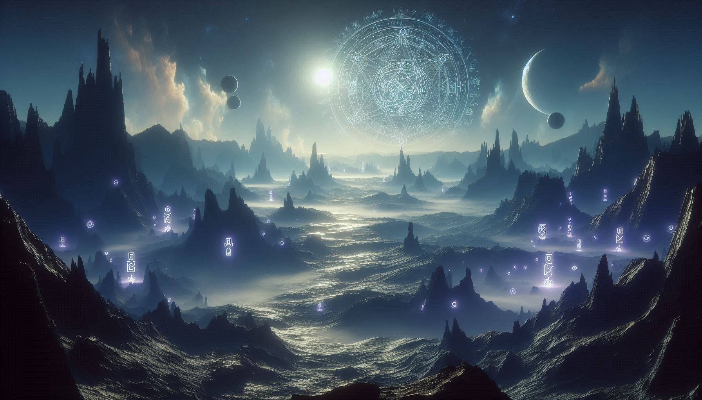

THE WORLD'S MOST MYSTERIOUS BOOK
Voynich Manuscript ennal 15-th century-il ezhuthappetta oru ancient book aanu. Ithile ezhuthukalum, chithrangalum lokath ithuvare kandupidichittulla oru bhashayumayi bandhamillathathaanu. World-ile ettavum nalla cryptographers-um AI systems-um try cheythittum ithuvare ithu Decode cheyyan kazhiyilla.
Ee book-il pala strange aaya karyangal undu:
| SECTION | DESCRIPTION |
|---|---|
| Botanical | Lokath oridathum illatha "Alien Plants"-inte drawings. |
| Astrological | Nammude Solar System-umayi match aakatha strange star maps. |
| Biological | Green liquid-il bath cheyyunna thonnikkunna strange human figures. |

Pala interesting theories-um ee book-ine kurichu undu:
Carbon dating vazhi ee book 1404 and 1438-num idayil ezhuthiyathaanu ennu confirm cheythittundu. Athayath 600 varshatholam pazhakkam undu! 1912-il Wilfrid Voynich enna book dealer aanu ithu kandethiyath. Ippo ithu Yale University-ile library-il super-secure aayi vechittundu.
Chila scholars parayunnu ithu verum oru "Hoax" (kaliyakkan undakkiyath) aayirikkum enn. Pakshe, ezhuthiya reethi nokkiyal oru "Natural Language"-inte pattern ithil undennu AI models confirm cheythu. Athayath ithu verum random lines alla, sathyamaayum entho ezhuthiyirikkukayaanu.
Voynich Manuscript oru valiya challenge aanu. Internet-um AI-yum ulla ee modern lokathum namukku oru pazhaya book-ile bhasha manasilakkan kazhiyunnilla ennullath athishayippikkunnu. Maybe some things are better left Unspoken. 😌